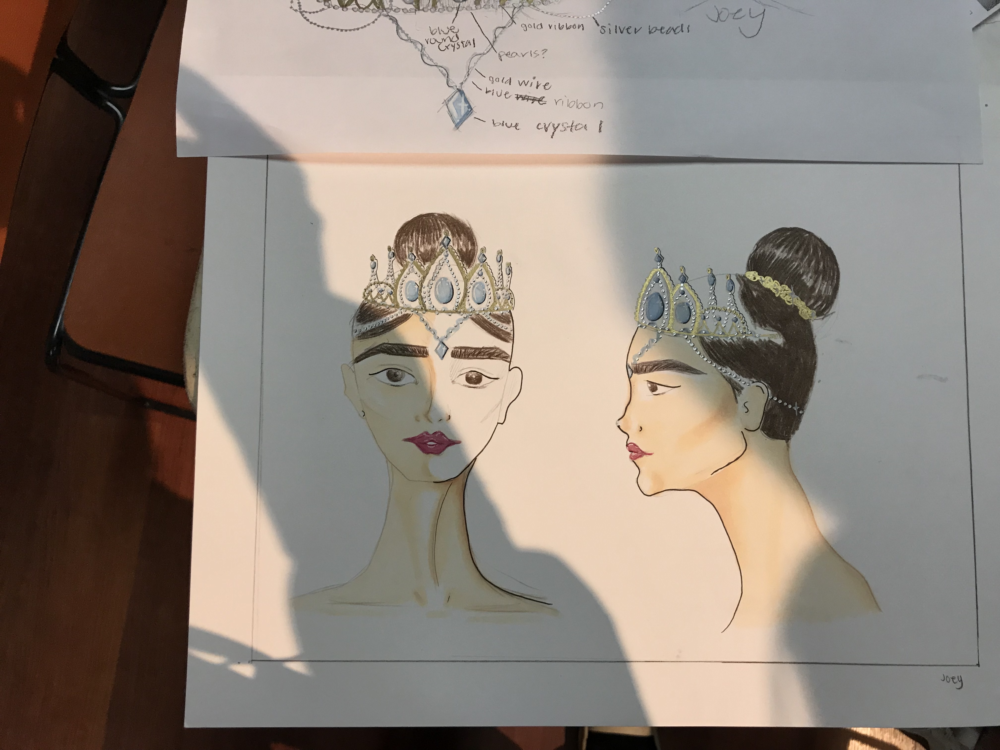

Fall dance concert tiarra
Project Description:
THis tiarra was made for the lead queen dancer during last years fall dance concert. I was put under the pressure and finished the tiarra in one day. I sew every bead by hand stitching, mainly used light blue and light green to shown the queen's loyalty in the ballet.
